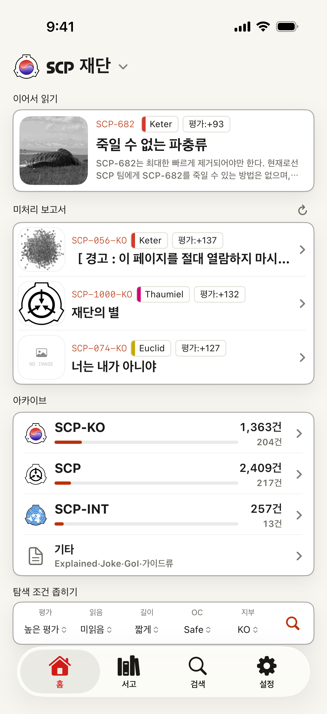
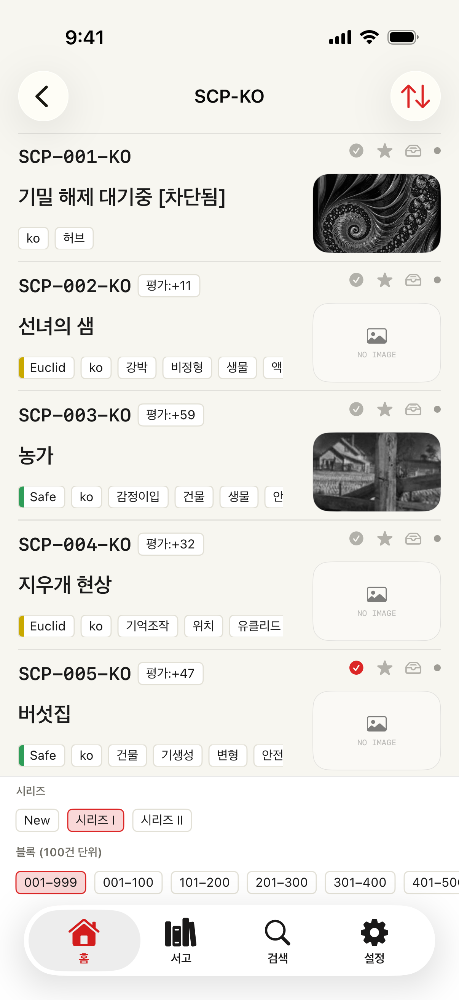
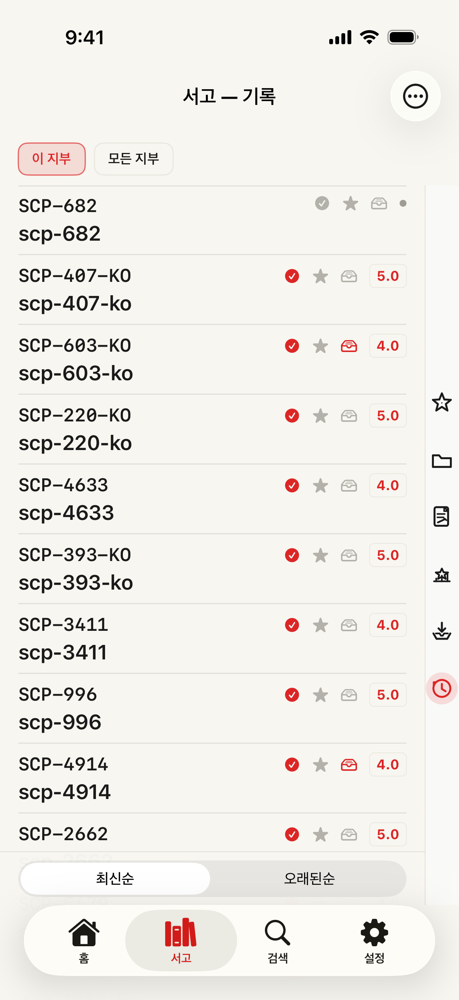

Free
번호·제목·태그·등급·길이·Wiki 평가 검색은 무료입니다. 기록, 평가, 알림, 위젯, 관측 기록 요약·활동 로그·읽기 대기도 무료입니다. 즐겨찾기 20개, 나중에 읽기 100개.
SCP docs · 6.0.2 · 2026-10-10
번호·제목·태그·등급·길이·Wiki 평가 검색은 무료입니다. 기록, 평가, 알림, 위젯, 관측 기록 요약·활동 로그·읽기 대기도 무료입니다. 즐겨찾기 20개, 나중에 읽기 100개.
프리미엄은 광고 제거, 하이라이트·메모 작성, 음성 읽기, 오프라인, 폴더, 메모·개인 기록 검색, 저장 검색·새 결과 알림, 상세 분석을 제공합니다. 즐겨찾기와 나중에 읽기의 구독 한도 없음(목록별 안전 한도 10,000개). 월간·연간 구독.
URL·제목·본문·메모·하이라이트를 각각 선택하고 설정을 유지합니다. 미리보기 후 공유, 복사, 파일 저장, 등록된 대상으로 저장합니다. 카드 편집도 여기서 엽니다. 본문은 리더에 표시된 현재 문서에서 가져오며 서고에서 일괄 수집하지 않습니다.
각 지부 언어로 읽습니다. 앱과 사이트는 17개 언어를 지원합니다. 출처의 저자·라이선스 표시가 기준입니다.
App Store · iPhone / iPad · iOS 17+Reader / Catalog / Library


